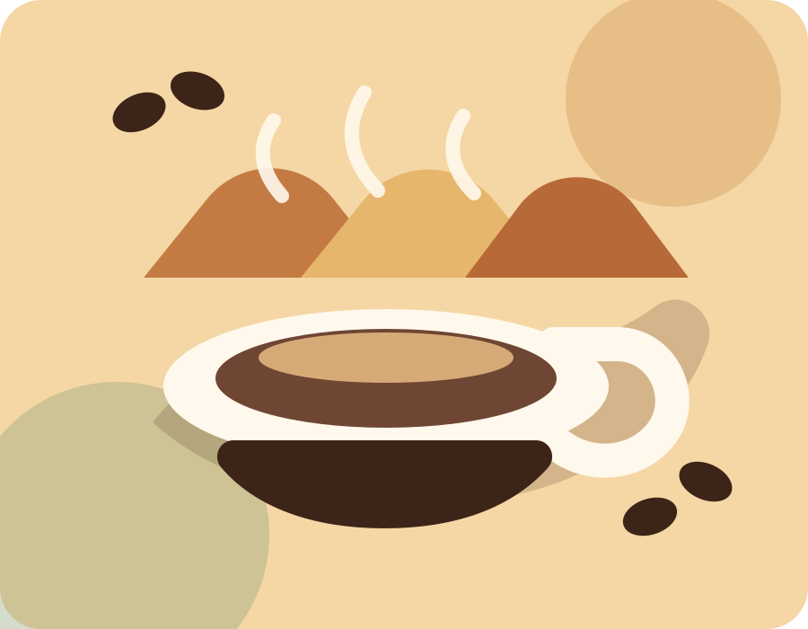
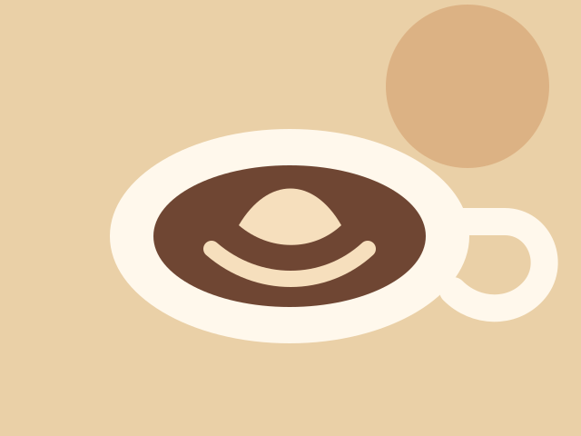
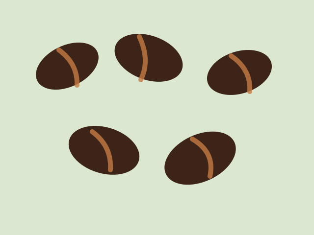
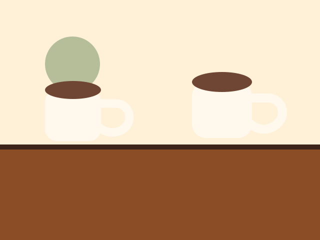
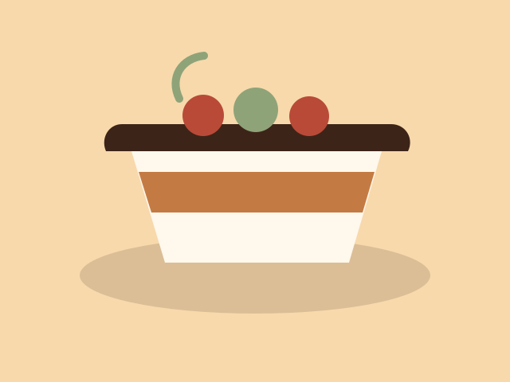
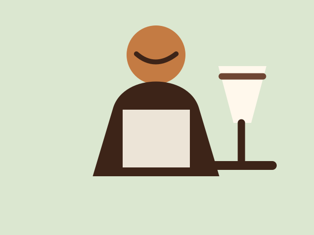
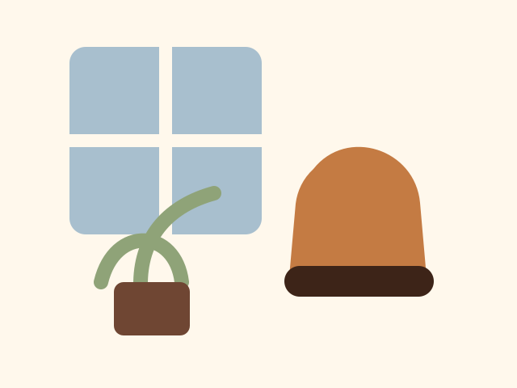
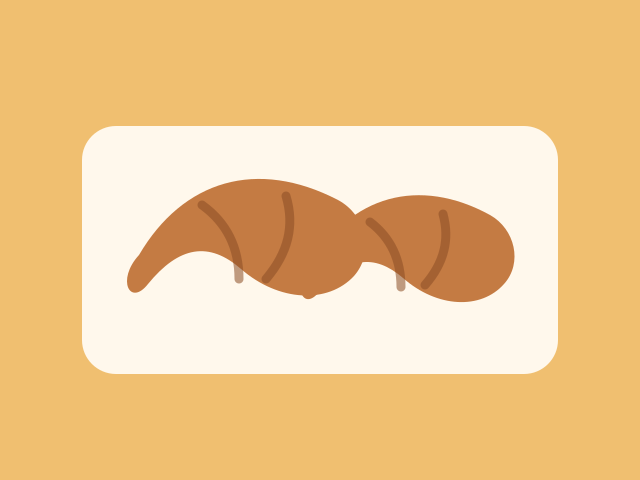
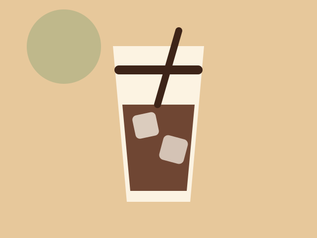

Graos selecionados
Torra media, aroma marcante e preparo sob medida para cada bebida.
Cafe especial, paes frescos e pausa boa
No Aurora Cafe, cada xicara e preparada com graos selecionados, receitas autorais e um ambiente pensado para encontros, estudos e bons comecos de manha.

Torra media, aroma marcante e preparo sob medida para cada bebida.
Bolos, croissants e sanduiches feitos em pequenas fornadas.
Mesas amplas, luz natural e clima tranquilo para ficar mais um pouco.
Galeria
As imagens se reorganizam com Flexbox: quatro por linha no desktop, duas no tablet e uma no celular.








Sobre nos
A Aurora nasceu para unir cafe de qualidade, comida afetiva e um espaco que convida a desacelerar. Nossa proposta e valorizar produtores locais, ingredientes frescos e experiencias simples, mas memoraveis.
Contato
Rua das Flores, 128 - Centro | Segunda a sabado, das 08h as 20h.